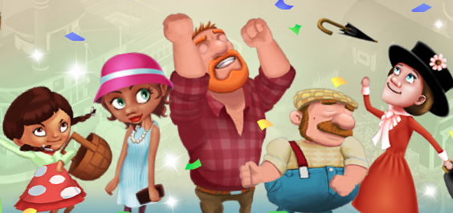
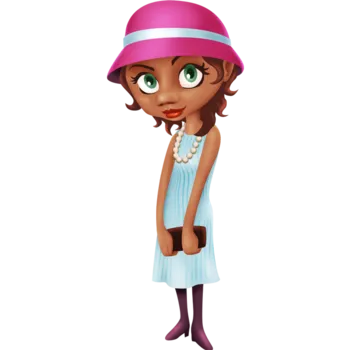
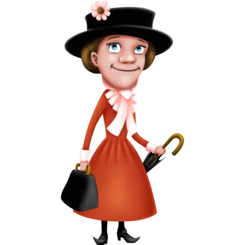
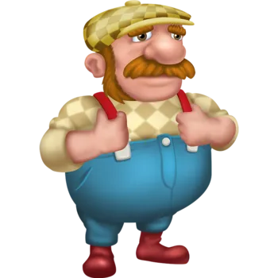
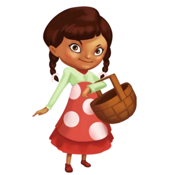

Hay Day features many characters, (wiki page for full list of charcters) . I will not cover all the players in this website but highlight some of the important ones!
Greg is a level 151 NPC and is the first character that the player meets in the game. He is meant to be the farmer/player's mentor throughout the game and walk the player through the beginning stages of caring for your farm animals and processing goods in the various machines (I will elaborate on the machines later). The player can visit Greg's farm via the "Friends" tab located on the bottom of the screen and purchase goods from Greg's roadside shop which resets the items every 24 hours. For 5 diamonds the player can reset the items Greg sells before the 24 hours if they would like to. A fun fact about Greg's farm is that he has every machine and animal in the game on it!
There are 4 farm visitors who can visit your farm and request goods. What this means is that they ask to buy a certain product in exchange for some coins. When interacting with the visitor, the player will be prompted with the sale offer and they will have the option to sell or deny the offer. If the player says yes then the transaction takes place on the spot, but if the player denies then the visitor leaves. The visitor will stand around in front of the player's farm until the player interacts with them.
| Picture | Name | Little Fact |
|---|---|---|
|  | Joan | Joan is the most femininely designed character and always clutches her purse |
|  | Mary | Her character is based off of that of Mary Poppins |
|  | Mike | He owns Mike's Mill |
|  | Tilly | Tilly is the only child farm visitor |